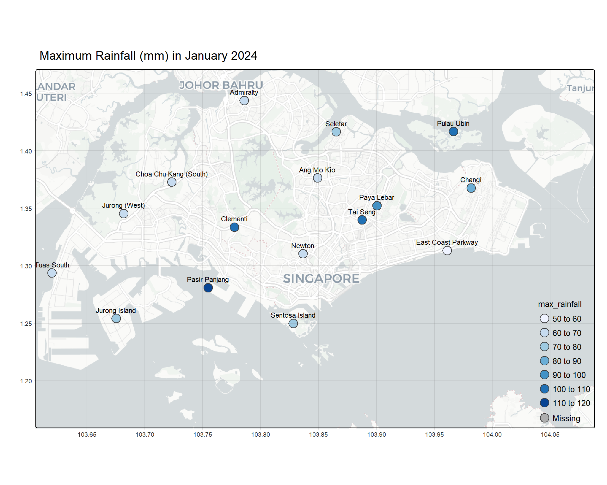

pacman::p_load(sp, sf, raster, spatstat, tmap, tidyverse,
spNetwork, tmaptools, raster, leaflet, patchwork, gridExtra,
ggplot2, png, grid, terra, gstat, viridis, automap, stars)Take-home Exercise 3
Prototyping Modules for Visual Analytics Shiny Application
1 Getting Started
1.1 Install and Load R Packages
2 Import Data
2.1 Import Aspatial Data
weather <- read_csv("data/aspatial/weather.csv")Rows: 6222 Columns: 13
── Column specification ────────────────────────────────────────────────────────
Delimiter: ","
chr (1): station
dbl (12): year, month, day, daily_rainfall_total_mm, highest_30_min_rainfall...
ℹ Use `spec()` to retrieve the full column specification for this data.
ℹ Specify the column types or set `show_col_types = FALSE` to quiet this message.station <- read_csv("data/aspatial/station.csv")Rows: 63 Columns: 3
── Column specification ────────────────────────────────────────────────────────
Delimiter: ","
chr (1): Station
dbl (2): Latitude, Longitude
ℹ Use `spec()` to retrieve the full column specification for this data.
ℹ Specify the column types or set `show_col_types = FALSE` to quiet this message.2.2 Import Geospatial Data
mpsz <- st_read(dsn = "data/geospatial",
layer = "MPSZ-2019") %>%
st_transform(crs = 3414)Reading layer `MPSZ-2019' from data source
`C:\brigittatsai\ISSS608_AY2024-25_T2\Take-home_Ex\Take-home_Ex03\data\geospatial'
using driver `ESRI Shapefile'
Simple feature collection with 332 features and 6 fields
Geometry type: MULTIPOLYGON
Dimension: XY
Bounding box: xmin: 103.6057 ymin: 1.158699 xmax: 104.0885 ymax: 1.470775
Geodetic CRS: WGS 843 Data Preparation
3.1 Join Weather Data and Station Data
daily_weather <- left_join(station, weather,
by = c("Station" = "station"),
relationship = "many-to-many")3.2 Set CRS
daily_weather <- st_as_sf(daily_weather,
coords = c("Longitude",
"Latitude"),
crs= 4326) %>%
st_transform(crs = 3414)3.3 Match Station Names
sort(unique(daily_weather$Station)) [1] "Admiralty" "Admiralty (West)"
[3] "Ang Mo Kio" "Boon Lay (East)"
[5] "Boon Lay (West)" "Botanic Garden"
[7] "Buangkok" "Bukit Panjang"
[9] "Bukit Timah" "Buona Vista"
[11] "Chai Chee" "Changi"
[13] "Choa Chu Kang (Central)" "Choa Chu Kang (South)"
[15] "Choa Chu Kang (West)" "Clementi"
[17] "Dhoby Ghaut" "East Coast Parkway"
[19] "Jurong (East)" "Jurong (North)"
[21] "Jurong (West)" "Jurong Island"
[23] "Jurong Pier" "Kampong Bahru"
[25] "Kent Ridge" "Khatib"
[27] "Kranji Reservoir" "Lim Chu Kang"
[29] "Lower Peirce Reservoir" "Macritchie Reservoir"
[31] "Mandai" "Marina Barrage"
[33] "Marine Parade" "Newton"
[35] "Nicoll Highway" "Pasir Panjang"
[37] "Pasir Ris (Central)" "Pasir Ris (West)"
[39] "Paya Lebar" "Pulau Ubin"
[41] "Punggol" "Queenstown"
[43] "Seletar" "Semakau Island"
[45] "Sembawang" "Sentosa Island"
[47] "Serangoon" "Serangoon North"
[49] "Simei" "Somerset (Road)"
[51] "Tai Seng" "Tanjong Katong"
[53] "Tanjong Pagar" "Tengah"
[55] "Toa Payoh" "Tuas"
[57] "Tuas South" "Tuas West"
[59] "Ulu Pandan" "Upper Peirce Reservoir"
[61] "Upper Thomson" "Whampoa"
[63] "Yishun" sort(unique(mpsz$SUBZONE_N)) [1] "ADMIRALTY" "AIRPORT ROAD"
[3] "ALEXANDRA HILL" "ALEXANDRA NORTH"
[5] "ALJUNIED" "ANAK BUKIT"
[7] "ANCHORVALE" "ANG MO KIO TOWN CENTRE"
[9] "ANSON" "BAHAR"
[11] "BALESTIER" "BANGKIT"
[13] "BAYFRONT SUBZONE" "BAYSHORE"
[15] "BEDOK NORTH" "BEDOK RESERVOIR"
[17] "BEDOK SOUTH" "BENCOOLEN"
[19] "BENDEMEER" "BENOI SECTOR"
[21] "BIDADARI" "BISHAN EAST"
[23] "BOAT QUAY" "BOON KENG"
[25] "BOON LAY PLACE" "BOON TECK"
[27] "BOULEVARD" "BRADDELL"
[29] "BRAS BASAH" "BRICKLAND"
[31] "BRICKWORKS" "BUGIS"
[33] "BUKIT BATOK CENTRAL" "BUKIT BATOK EAST"
[35] "BUKIT BATOK SOUTH" "BUKIT BATOK WEST"
[37] "BUKIT HO SWEE" "BUKIT MERAH"
[39] "CAIRNHILL" "CECIL"
[41] "CENTRAL SUBZONE" "CENTRAL WATER CATCHMENT"
[43] "CHANGI AIRPORT" "CHANGI BAY"
[45] "CHANGI POINT" "CHANGI WEST"
[47] "CHATSWORTH" "CHENG SAN"
[49] "CHIN BEE" "CHINA SQUARE"
[51] "CHINATOWN" "CHOA CHU KANG CENTRAL"
[53] "CHOA CHU KANG NORTH" "CHONG BOON"
[55] "CITY HALL" "CITY TERMINALS"
[57] "CLARKE QUAY" "CLEANTECH"
[59] "CLEMENTI CENTRAL" "CLEMENTI NORTH"
[61] "CLEMENTI WEST" "CLEMENTI WOODS"
[63] "CLIFFORD PIER" "COMMONWEALTH"
[65] "COMPASSVALE" "CONEY ISLAND"
[67] "CORONATION ROAD" "CRAWFORD"
[69] "DAIRY FARM" "DEFU INDUSTRIAL PARK"
[71] "DEPOT ROAD" "DHOBY GHAUT"
[73] "DOVER" "DUNEARN"
[75] "EAST COAST" "EVERTON PARK"
[77] "FABER" "FAJAR"
[79] "FARRER COURT" "FARRER PARK"
[81] "FERNVALE" "FLORA DRIVE"
[83] "FOREST HILL" "FORT CANNING"
[85] "FRANKEL" "GALI BATU"
[87] "GARDEN" "GEYLANG BAHRU"
[89] "GEYLANG EAST" "GHIM MOH"
[91] "GOMBAK" "GOODWOOD PARK"
[93] "GREENWOOD PARK" "GUILIN"
[95] "GUL BASIN" "GUL CIRCLE"
[97] "HENDERSON HILL" "HILLCREST"
[99] "HILLVIEW" "HOLLAND DRIVE"
[101] "HOLLAND ROAD" "HONG KAH"
[103] "HONG KAH NORTH" "HOUGANG CENTRAL"
[105] "HOUGANG EAST" "HOUGANG WEST"
[107] "INSTITUTION HILL" "INTERNATIONAL BUSINESS PARK"
[109] "ISTANA NEGARA" "JELEBU"
[111] "JOO KOON" "JOO SENG"
[113] "JURONG GATEWAY" "JURONG ISLAND AND BUKOM"
[115] "JURONG PORT" "JURONG RIVER"
[117] "JURONG WEST CENTRAL" "KAKI BUKIT"
[119] "KALLANG BAHRU" "KALLANG WAY"
[121] "KAMPONG BUGIS" "KAMPONG GLAM"
[123] "KAMPONG JAVA" "KAMPONG TIONG BAHRU"
[125] "KAMPONG UBI" "KANGKAR"
[127] "KATONG" "KEAT HONG"
[129] "KEBUN BAHRU" "KEMBANGAN"
[131] "KENT RIDGE" "KHATIB"
[133] "KIAN TECK" "KIM KEAT"
[135] "KOVAN" "KRANJI"
[137] "LAKESIDE (BUSINESS)" "LAKESIDE (LEISURE)"
[139] "LAVENDER" "LEEDON PARK"
[141] "LEONIE HILL" "LIM CHU KANG"
[143] "LITTLE INDIA" "LIU FANG"
[145] "LORONG 8 TOA PAYOH" "LORONG AH SOO"
[147] "LORONG CHUAN" "LORONG HALUS"
[149] "LORONG HALUS NORTH" "LOWER SELETAR"
[151] "LOYANG EAST" "LOYANG WEST"
[153] "MACKENZIE" "MACPHERSON"
[155] "MALCOLM" "MANDAI EAST"
[157] "MANDAI ESTATE" "MANDAI WEST"
[159] "MARGARET DRIVE" "MARINA CENTRE"
[161] "MARINA EAST" "MARINA EAST (MP)"
[163] "MARINA SOUTH" "MARINE PARADE"
[165] "MARITIME SQUARE" "MARYMOUNT"
[167] "MATILDA" "MAXWELL"
[169] "MEI CHIN" "MIDVIEW"
[171] "MONK'S HILL" "MOULMEIN"
[173] "MOUNT EMILY" "MOUNT PLEASANT"
[175] "MOUNTBATTEN" "MURAI"
[177] "NASSIM" "NATIONAL UNIVERSITY OF S'PORE"
[179] "NATURE RESERVE" "NEE SOON"
[181] "NEWTON CIRCUS" "NICOLL"
[183] "NORTH-EASTERN ISLANDS" "NORTH COAST"
[185] "NORTHLAND" "NORTHSHORE"
[187] "ONE NORTH" "ONE TREE HILL"
[189] "ORANGE GROVE" "OXLEY"
[191] "PANDAN" "PANG SUA"
[193] "PARK" "PASIR PANJANG 1"
[195] "PASIR PANJANG 2" "PASIR RIS CENTRAL"
[197] "PASIR RIS DRIVE" "PASIR RIS PARK"
[199] "PASIR RIS WAFER FAB PARK" "PASIR RIS WEST"
[201] "PATERSON" "PAYA LEBAR EAST"
[203] "PAYA LEBAR NORTH" "PAYA LEBAR WEST"
[205] "PEARL'S HILL" "PEI CHUN"
[207] "PENG SIANG" "PENJURU CRESCENT"
[209] "PEOPLE'S PARK" "PHILLIP"
[211] "PIONEER SECTOR" "PLAB"
[213] "PLANTATION" "PORT"
[215] "POTONG PASIR" "PULAU PUNGGOL BARAT"
[217] "PULAU PUNGGOL TIMOR" "PULAU SELETAR"
[219] "PUNGGOL CANAL" "PUNGGOL FIELD"
[221] "PUNGGOL TOWN CENTRE" "QUEENSWAY"
[223] "RAFFLES PLACE" "REDHILL"
[225] "RESERVOIR VIEW" "RIDOUT"
[227] "RIVERVALE" "ROBERTSON QUAY"
[229] "ROCHOR CANAL" "SAFTI"
[231] "SAMULUN" "SAUJANA"
[233] "SELEGIE" "SELETAR"
[235] "SELETAR AEROSPACE PARK" "SELETAR HILLS"
[237] "SEMAKAU" "SEMBAWANG CENTRAL"
[239] "SEMBAWANG EAST" "SEMBAWANG HILLS"
[241] "SEMBAWANG NORTH" "SEMBAWANG SPRINGS"
[243] "SEMBAWANG STRAITS" "SENGKANG TOWN CENTRE"
[245] "SENGKANG WEST" "SENJA"
[247] "SENNETT" "SENOKO NORTH"
[249] "SENOKO SOUTH" "SENOKO WEST"
[251] "SENTOSA" "SERANGOON CENTRAL"
[253] "SERANGOON GARDEN" "SERANGOON NORTH"
[255] "SERANGOON NORTH IND ESTATE" "SHANGRI-LA"
[257] "SHIPYARD" "SIGLAP"
[259] "SIMEI" "SIMPANG NORTH"
[261] "SIMPANG SOUTH" "SINGAPORE GENERAL HOSPITAL"
[263] "SINGAPORE POLYTECHNIC" "SOMERSET"
[265] "SOUTHERN GROUP" "SPRINGLEAF"
[267] "STRAITS VIEW" "SUDONG"
[269] "SUNGEI ROAD" "SUNSET WAY"
[271] "SWISS CLUB" "TAGORE"
[273] "TAI SENG" "TAMAN JURONG"
[275] "TAMPINES EAST" "TAMPINES NORTH"
[277] "TAMPINES WEST" "TANGLIN"
[279] "TANGLIN HALT" "TANJONG IRAU"
[281] "TANJONG PAGAR" "TANJONG RHU"
[283] "TEBAN GARDENS" "TECK WHYE"
[285] "TELOK BLANGAH DRIVE" "TELOK BLANGAH RISE"
[287] "TELOK BLANGAH WAY" "TENGAH INDUSTRIAL ESTATE"
[289] "TENGEH" "THE WHARVES"
[291] "TIONG BAHRU" "TIONG BAHRU STATION"
[293] "TOA PAYOH CENTRAL" "TOA PAYOH WEST"
[295] "TOH GUAN" "TOH TUCK"
[297] "TOWNSVILLE" "TRAFALGAR"
[299] "TUAS BAY" "TUAS NORTH"
[301] "TUAS PROMENADE" "TUAS VIEW"
[303] "TUAS VIEW EXTENSION" "TUKANG"
[305] "TURF CLUB" "TYERSALL"
[307] "ULU PANDAN" "UPPER PAYA LEBAR"
[309] "UPPER THOMSON" "VICTORIA"
[311] "WATERWAY EAST" "WENYA"
[313] "WEST COAST" "WOODGROVE"
[315] "WOODLANDS EAST" "WOODLANDS REGIONAL CENTRE"
[317] "WOODLANDS SOUTH" "WOODLANDS WEST"
[319] "WOODLEIGH" "XILIN"
[321] "YEW TEE" "YIO CHU KANG"
[323] "YIO CHU KANG EAST" "YIO CHU KANG NORTH"
[325] "YIO CHU KANG WEST" "YISHUN CENTRAL"
[327] "YISHUN EAST" "YISHUN SOUTH"
[329] "YISHUN WEST" "YUHUA EAST"
[331] "YUHUA WEST" "YUNNAN" mpsz <- mpsz %>%
mutate(SUBZONE_N = case_when(
SUBZONE_N == "ADMIRALTY" ~ "Admiralty",
SUBZONE_N == "AIRPORT ROAD" ~ "Airport Road",
SUBZONE_N == "ALEXANDRA HILL" ~ "Alexandra Hill",
SUBZONE_N == "ALEXANDRA NORTH" ~ "Alexandra North",
SUBZONE_N == "ALJUNIED" ~ "Aljunied",
SUBZONE_N == "ANAK BUKIT" ~ "Anak Bukit",
SUBZONE_N == "ANCHORVALE" ~ "Anchorvale",
SUBZONE_N == "ANG MO KIO" ~ "Ang Mo Kio",
SUBZONE_N == "ANSON" ~ "Anson",
SUBZONE_N == "BAHAR" ~ "Bahar",
SUBZONE_N == "BALESTIER" ~ "Balestier",
SUBZONE_N == "BANGKIT" ~ "Bangkit",
SUBZONE_N == "BAYFRONT SUBZONE" ~ "Bayfront Subzone",
SUBZONE_N == "BAYSHORE" ~ "Bayshore",
SUBZONE_N == "BEDOK NORTH" ~ "Bedok North",
SUBZONE_N == "BEDOK RESERVOIR" ~ "Bedok Reservoir",
SUBZONE_N == "BEDOK SOUTH" ~ "Bedok South",
SUBZONE_N == "BENCOOLEN" ~ "Bencoolen",
SUBZONE_N == "BENDEMEER" ~ "Bendemeer",
SUBZONE_N == "BENOI SECTOR" ~ "Benoi Sector",
SUBZONE_N == "BIDADARI" ~ "Bidadari",
SUBZONE_N == "BISHAN EAST" ~ "Bishan East",
SUBZONE_N == "BOAT QUAY" ~ "Boat Quay",
SUBZONE_N == "BOON KENG" ~ "Boon Keng",
SUBZONE_N == "BOON LAY (WEST)" ~ "Boon Lay (West)",
SUBZONE_N == "BOON TECK" ~ "Boon Teck",
SUBZONE_N == "BOULEVARD" ~ "Boulevard",
SUBZONE_N == "BRADDELL" ~ "Braddell",
SUBZONE_N == "BRAS BASAH" ~ "Bras Basah",
SUBZONE_N == "BRICKLAND" ~ "Brickland",
SUBZONE_N == "BRICKWORKS" ~ "Brickworks",
SUBZONE_N == "BUGIS" ~ "Bugis",
SUBZONE_N == "BUKIT BATOK CENTRAL" ~ "Bukit Batok Central",
SUBZONE_N == "BUKIT BATOK EAST" ~ "Bukit Batok East",
SUBZONE_N == "BUKIT BATOK SOUTH" ~ "Bukit Batok South",
SUBZONE_N == "BUKIT BATOK WEST" ~ "Bukit Batok West",
SUBZONE_N == "BUKIT HO SWEE" ~ "Bukit Ho Swee",
SUBZONE_N == "BUKIT MERAH" ~ "Bukit Merah",
SUBZONE_N == "BUKIT PANJANG" ~ "Bukit Panjang",
SUBZONE_N == "BUKIT TIMAH" ~ "Bukit Timah",
SUBZONE_N == "CAIRNHILL" ~ "Cairnhill",
SUBZONE_N == "CECIL" ~ "Cecil",
SUBZONE_N == "CENTRAL SUBZONE" ~ "Central Subzone",
SUBZONE_N == "CENTRAL WATER CATCHMENT" ~ "Central Water Catchment",
SUBZONE_N == "CHAI CHEE" ~ "Chai Chee",
SUBZONE_N == "CHANGI" ~ "Changi",
SUBZONE_N == "CHANGI BAY" ~ "Changi Bay",
SUBZONE_N == "CHANGI POINT" ~ "Changi Point",
SUBZONE_N == "CHANGI WEST" ~ "Changi West",
SUBZONE_N == "CHATSWORTH" ~ "Chatsworth",
SUBZONE_N == "CHENG SAN" ~ "Cheng San",
SUBZONE_N == "CHIN BEE" ~ "Chin Bee",
SUBZONE_N == "CHINA SQUARE" ~ "China Square",
SUBZONE_N == "CHINATOWN" ~ "Chinatown",
SUBZONE_N == "CHOA CHU KANG (CENTRAL)" ~ "Choa Chu Kang (Central)",
SUBZONE_N == "CHOA CHU KANG (NORTH)" ~ "Choa Chu Kang (North)",
SUBZONE_N == "CHONG BOON" ~ "Chong Boon",
SUBZONE_N == "CITY HALL" ~ "City Hall",
SUBZONE_N == "CITY TERMINALS" ~ "City Terminals",
SUBZONE_N == "CLARKE QUAY" ~ "Clarke Quay",
SUBZONE_N == "CLEANTECH" ~ "Cleantech",
SUBZONE_N == "CLEMENTI" ~ "Clementi",
SUBZONE_N == "CLEMENTI NORTH" ~ "Clementi North",
SUBZONE_N == "CLEMENTI WEST" ~ "Clementi West",
SUBZONE_N == "CLEMENTI WOODS" ~ "Clementi Woods",
SUBZONE_N == "CLIFFORD PIER" ~ "Clifford Pier",
SUBZONE_N == "COMMONWEALTH" ~ "Commonwealth",
SUBZONE_N == "COMPASSVALE" ~ "Compassvale",
SUBZONE_N == "CONEY ISLAND" ~ "Coney Island",
SUBZONE_N == "CORONATION ROAD" ~ "Coronation Road",
SUBZONE_N == "CRAWFORD" ~ "Crawford",
SUBZONE_N == "DAIRY FARM" ~ "Dairy Farm",
SUBZONE_N == "DEFU INDUSTRIAL PARK" ~ "Defu Industrial Park",
SUBZONE_N == "DEPOT ROAD" ~ "Depot Road",
SUBZONE_N == "DHOBY GHAUT" ~ "Dhoby Ghaut",
SUBZONE_N == "DOVER" ~ "Dover",
SUBZONE_N == "DUNEARN" ~ "Dunearn",
SUBZONE_N == "EAST COAST PARKWAY" ~ "East Coast Parkway",
SUBZONE_N == "EVERTON PARK" ~ "Everton Park",
SUBZONE_N == "FABER" ~ "Faber",
SUBZONE_N == "FAJAR" ~ "Fajar",
SUBZONE_N == "FARRER COURT" ~ "Farrer Court",
SUBZONE_N == "FARRER PARK" ~ "Farrer Park",
SUBZONE_N == "FERNVALE" ~ "Fernvale",
TRUE ~ SUBZONE_N # Keep other values unchanged
))3.4 Rename Columns
weather <- weather %>%
rename(Station = station,
Year = year,
Month = month,
Day = day,
rainfall_total = daily_rainfall_total_mm,
rainfall_30 = highest_30_min_rainfall_mm,
rainfall_60 = highest_60_min_rainfall_mm,
rainfall_120 = highest_120_min_rainfall_mm,
mean_temp = mean_temperature_c,
max_temp = maximum_temperature_c,
min_temp = minimum_temperature_c,
mean_wind = mean_wind_speed_km_h,
max_wind = max_wind_speed_km_h)daily_weather <- daily_weather %>%
rename(Year = year,
Month = month,
Day = day,
rainfall_total = daily_rainfall_total_mm,
rainfall_30 = highest_30_min_rainfall_mm,
rainfall_60 = highest_60_min_rainfall_mm,
rainfall_120 = highest_120_min_rainfall_mm,
mean_temp = mean_temperature_c,
max_temp = maximum_temperature_c,
min_temp = minimum_temperature_c,
mean_wind = mean_wind_speed_km_h,
max_wind = max_wind_speed_km_h)3.5 Remove Missing Records
Define list of stations:
stations <- c("Admiralty", "Ang Mo Kio", "Changi", "Choa Chu Kang (South)",
"Clementi", "East Coast Parkway", "Jurong (West)",
"Jurong Island", "Newton", "Pasir Panjang", "Paya Lebar",
"Pulau Ubin", "Seletar", "Sembawang", "Sentosa Island",
"Tai Seng", "Tuas South")weather <- weather %>%
filter(!(Station %in% stations & (is.na(rainfall_total) | is.na(rainfall_30) |
is.na(rainfall_60) | is.na(rainfall_120) |
is.na(mean_temp) | is.na(max_temp) |
is.na(min_temp) | is.na(mean_wind) |
is.na(max_wind))))daily_weather <- daily_weather %>%
filter(!(Station %in% stations & (is.na(rainfall_total) | is.na(rainfall_30) |
is.na(rainfall_60) | is.na(rainfall_120) |
is.na(mean_temp) | is.na(max_temp) |
is.na(min_temp) | is.na(mean_wind) |
is.na(max_wind))))3.6 Handling Date Data
weather <- weather %>%
mutate(
yearmonth = make_date(Year, Month, 1)
)daily_weather <- daily_weather %>%
mutate(
yearmonth = make_date(Year, Month, 1)
)3.7 Derive Monthly Data
# Create a dataset with all combinations of yearmonth and Station (to keep all stations)
all_combinations <- daily_weather %>%
st_drop_geometry() %>% # Drop geometry temporarily
distinct(yearmonth, Station) 3.7.1 Monthly Rainfall
# Merge the combinations back to weather_map to fill in missing rainfall data
monthly_rainfall <- daily_weather %>%
group_by(yearmonth, Station, geometry) %>%
summarize(
max_rainfall = if (all(is.na(rainfall_total))) NA_real_ else max(rainfall_total, na.rm = TRUE),
mean_rainfall = if (all(is.na(rainfall_total))) NA_real_ else mean(rainfall_total, na.rm = TRUE),
.groups = "drop"
) %>%
right_join(all_combinations, by = c("yearmonth", "Station")) %>%
arrange(yearmonth, Station)months_2024 <- seq(ymd("2024-01-01"), ymd("2024-12-01"), by = "month")
stations_missing_yearmonth <- monthly_rainfall %>%
filter(is.na(yearmonth)) %>%
mutate(yearmonth = list(months_2024)) %>% # Append rows for remaining stations
unnest(yearmonth)
monthly_rainfall <- monthly_rainfall %>%
filter(!is.na(yearmonth)) %>%
bind_rows(stations_missing_yearmonth) %>%
arrange(Station, yearmonth)3.7.2 Monthly Temperature
monthly_temp <- daily_weather %>%
group_by(yearmonth, Station, geometry) %>%
summarize(
max_temp = if (all(is.na(max_temp))) NA_real_ else max(max_temp, na.rm = TRUE),
mean_temp = if (all(is.na(mean_temp))) NA_real_ else mean(mean_temp, na.rm = TRUE),
.groups = "drop"
) %>%
right_join(all_combinations, by = c("yearmonth", "Station")) %>%
arrange(yearmonth, Station)months_2024 <- seq(ymd("2024-01-01"), ymd("2024-12-01"), by = "month")
stations_missing_yearmonth <- monthly_temp %>%
filter(is.na(yearmonth)) %>%
mutate(yearmonth = list(months_2024)) %>% # Append rows for remaining stations
unnest(yearmonth)
monthly_temp <- monthly_temp %>%
filter(!is.na(yearmonth)) %>%
bind_rows(stations_missing_yearmonth) %>%
arrange(Station, yearmonth)3.7.3 Monthly Wind Speed
monthly_wind <- daily_weather %>%
group_by(yearmonth, Station, geometry) %>%
summarize(
max_wind = if (all(is.na(max_wind))) NA_real_ else max(max_wind, na.rm = TRUE),
mean_wind = if (all(is.na(mean_wind))) NA_real_ else mean(mean_wind, na.rm = TRUE),
.groups = "drop"
) %>%
right_join(all_combinations, by = c("yearmonth", "Station")) %>%
arrange(yearmonth, Station)months_2024 <- seq(ymd("2024-01-01"), ymd("2024-12-01"), by = "month")
stations_missing_yearmonth <- monthly_wind %>%
filter(is.na(yearmonth)) %>%
mutate(yearmonth = list(months_2024)) %>% # Append rows for remaining stations
unnest(yearmonth)
monthly_wind <- monthly_wind %>%
filter(!is.na(yearmonth)) %>%
bind_rows(stations_missing_yearmonth) %>%
arrange(Station, yearmonth)3.8 Join mpsz and weather
weather_nogeom <- st_drop_geometry(daily_weather)map <- left_join(mpsz, weather_nogeom,
by = c("SUBZONE_N" = "Station"),
relationship = "many-to-many")3.9 Derive Parameters
In the analysis, we aim to provide several aggregations to see the monthly weather conditions in the form of geospatial map. The following are the variables that we aim to show in the chart:
Weather Parameter:
- Rainfall
- Wind Speed
- Temperature
Measurement Options:
- Mean
- Maximum
- Frequency
Time Period:
- Monthly
3.9.1 Rainfall Parameters
To define the frequency of rainfall, we will use “Heavy Rain” as the baseline to define the frequency of rainfall in a defined period of time (weekly/monthly/quarterly). Any daily rainfall recorded that is above or equal to 31 mm/day is considered as heavy rain.
Rainfall Parameters
| Rain Type | Total Daily Rainfall (mm) |
|---|---|
| No Rain | 0 |
| Very Light Rain | 0.1 - 0.9 |
| Light Rain | 1.0 - 10 |
| Moderate Rain | 11 - 30 |
| Heavy Rain | 31 - 70 |
| Very Heavy Rain | 71 - 150 |
| Extremely Heavy Rain | > 151 |
source: https://www.nchm.gov.bt/attachment/ckfinder/userfiles/files/Rainfall%20intensity%20classification.pdf
# Flag heavy rains in the daily_weather dataframe
daily_weather <- daily_weather %>%
mutate(heavy_rain_count = if_else(rainfall_total > 31, 1, 0))# Aggregate the total monthly frequency
frequency_heavy_rain <- daily_weather %>%
group_by(Station, yearmonth) %>%
summarise(frequency_heavy_rain = sum(heavy_rain_count), .groups = "drop")# 1. Drop the geometry column (only for non-spatial join)
monthly_rainfall_no_geom <- st_drop_geometry(monthly_rainfall)
# 2. Perform the left join on the data (without geometry)
monthly_rainfall_no_geom <- left_join(monthly_rainfall_no_geom, frequency_heavy_rain,
by = c("Station" = "Station",
"yearmonth" = "yearmonth"))
# 3. Add the geometry column back to the joined dataframe
monthly_rainfall <- st_sf(monthly_rainfall_no_geom,
geometry = st_geometry(monthly_rainfall))monthly_rainfall <- monthly_rainfall %>%
mutate(month = format(ymd(yearmonth), "%B"))3.9.2 Temperature Parameter
Temperature Parameters
| Heat Stress | Temperature (°C) |
|---|---|
| Low Heat Stress | < 31 |
| Moderate Heat Stress | 31 ≤ °C < 33 |
| High Heat Stress | ≥ 33 |
source: https://www.weather.gov.sg/heat-stress/
range(daily_weather$max_temp, na.rm=TRUE)[1] 25.5 36.4daily_weather <- daily_weather %>%
mutate(high_heat_count = if_else(max_temp >= 33, 1, 0))frequency_high_heat <- daily_weather %>%
group_by(Station, yearmonth) %>%
summarise(frequency_high_heat = sum(high_heat_count), .groups = "drop")# 1. Drop the geometry column (only for non-spatial join)
monthly_temp_no_geom <- st_drop_geometry(monthly_temp)
# 2. Perform the left join on the data (without geometry)
monthly_temp_no_geom <- left_join(monthly_temp_no_geom, frequency_high_heat,
by = c("Station" = "Station",
"yearmonth" = "yearmonth"))
# 3. Add the geometry column back to the joined dataframe
monthly_temp <- st_sf(monthly_temp_no_geom,
geometry = st_geometry(monthly_temp))monthly_temp <- monthly_temp %>%
mutate(month = format(ymd(yearmonth), "%B"))3.9.3 Wind Speed Parameter
The parameter for wind speed is based on Beaufort Wind Scale. To define strong wind force, we will use wind force 7 to determine frequency of strong winds in Singapore.
Wind Speed Parameters
| Wind Force | Description | Speed (km/h) |
|---|---|---|
| 0 | Calm | < 1 |
| 1 | Light Air | 1 - 5 |
| 2 | Light Breeze | 6 - 11 |
| 3 | Gentle Breeze | 12 - 19 |
| 4 | Moderate Breeze | 20 - 28 |
| 5 | Fresh Breeze | 29 - 38 |
| 6 | Strong Breeze | 38 - 49 |
| 7 | Near Gale | 50 - 61 |
| 8 | Gale | 62 - 74 |
| 9 | Strong Gale | 75 - 88 |
| 10 | Storm | 89 - 102 |
| 11 | Violent Storm | 103 - 117 |
| 12 | Hurricane | ≥ 118 |
source: https://www.rmets.org/metmatters/beaufort-wind-scale
range(daily_weather$max_wind, na.rm=TRUE)[1] 13.0 105.4daily_weather <- daily_weather %>%
mutate(strong_wind_count = if_else(max_wind >= 50, 1, 0))frequency_strong_wind <- daily_weather %>%
group_by(Station, yearmonth) %>%
summarise(frequency_strong_wind = sum(strong_wind_count), .groups = "drop")# 1. Drop the geometry column (only for non-spatial join)
monthly_wind_no_geom <- st_drop_geometry(monthly_wind)
# 2. Perform the left join on the data (without geometry)
monthly_wind_no_geom <- left_join(monthly_wind_no_geom, frequency_strong_wind,
by = c("Station" = "Station",
"yearmonth" = "yearmonth"))
# 3. Add the geometry column back to the joined dataframe
monthly_wind <- st_sf(monthly_wind_no_geom,
geometry = st_geometry(monthly_wind))monthly_wind <- monthly_wind %>%
mutate(month = format(ymd(yearmonth), "%B"))3.10 Remove Missing Values
monthly_rainfall <- na.omit(monthly_rainfall)
monthly_temp <- na.omit(monthly_temp)
monthly_wind <- na.omit(monthly_wind)3.11 Combine Monthly Data
# Extract geometry from monthly_temp (assuming geometry is the same across all dataframes)
geometry_data <- monthly_temp %>% select(Station, yearmonth, month, geometry)
# Drop geometry using st_drop_geometry()
monthly_temp_no_geom <- monthly_temp %>% st_drop_geometry()
monthly_rainfall_no_geom <- monthly_rainfall %>% st_drop_geometry()
monthly_wind_no_geom <- monthly_wind %>% st_drop_geometry()
# Perform full joins on non-spatial data
monthly_weather_no_geom <- monthly_temp_no_geom %>%
full_join(monthly_rainfall_no_geom, by = c("Station", "yearmonth", "month")) %>%
full_join(monthly_wind_no_geom, by = c("Station", "yearmonth", "month"))
# Reattach the geometry column
monthly_weather <- left_join(monthly_weather_no_geom, geometry_data, by = c("Station", "yearmonth", "month"))
# Convert back to an sf object
monthly_weather <- st_as_sf(monthly_weather)3.12 Write Data to RDS
write_rds(monthly_weather, "data/rds/monthly_weather.rds", compress = "xz")
write_rds(daily_weather, "data/rds/daily_weather.rds", compress = "xz")
write_rds(monthly_rainfall, "data/rds/monthly_rainfall.rds", compress = "xz")
write_rds(monthly_temp, "data/rds/monthly_temp.rds", compress = "xz")
write_rds(monthly_wind, "data/rds/monthly_wind.rds", compress = "xz")4 Prototype
4.1 Inverse Distance Weighted (IDW) Visual
grid <- terra::rast(mpsz,
nrows = 690,
ncols = 1075)
gridclass : SpatRaster
dimensions : 690, 1075, 1 (nrow, ncol, nlyr)
resolution : 49.98037, 50.01103 (x, y)
extent : 2667.538, 56396.44, 15748.72, 50256.33 (xmin, xmax, ymin, ymax)
coord. ref. : SVY21 / Singapore TM (EPSG:3414) xy <- terra::xyFromCell(grid,
1:ncell(grid))
head(xy) x y
[1,] 2692.528 50231.33
[2,] 2742.509 50231.33
[3,] 2792.489 50231.33
[4,] 2842.469 50231.33
[5,] 2892.450 50231.33
[6,] 2942.430 50231.33coop <- st_as_sf(as.data.frame(xy),
coords = c("x", "y"),
crs = st_crs(mpsz))
coop <- st_filter(coop, mpsz)
head(coop)Simple feature collection with 6 features and 0 fields
Geometry type: POINT
Dimension: XY
Bounding box: xmin: 25883.42 ymin: 50231.33 xmax: 26133.32 ymax: 50231.33
Projected CRS: SVY21 / Singapore TM
geometry
1 POINT (25883.42 50231.33)
2 POINT (25933.4 50231.33)
3 POINT (25983.38 50231.33)
4 POINT (26033.36 50231.33)
5 POINT (26083.34 50231.33)
6 POINT (26133.32 50231.33)res <- gstat(formula = frequency_heavy_rain ~ 1,
locations = monthly_rainfall,
nmax = 5,
set = list(idp = 0))resp <- predict(res, coop)[inverse distance weighted interpolation]resp$x <- st_coordinates(resp)[,1]
resp$y <- st_coordinates(resp)[,2]
resp$pred <- resp$var1.pred
idw <- terra::rasterize(resp, grid,
field = "pred",
fun = "mean")
write_rds(idw, "data/rds/idw.rds", compress = "xz")tm_check_fix()[nothing to show] no data layers definedtmap_mode("plot")ℹ tmap mode set to "plot".tm_shape(idw) +
tm_raster(col_alpha = 0.6,
col.scale = tm_scale(
values = "brewer.blues")) +
tm_title("IDW Mean Frequency of Heavy Rain", size=1.5) +
tm_shape(monthly_weather) +
tm_text("Station", size=1, col="black", alpha = 0.7)
── tmap v3 code detected ───────────────────────────────────────────────────────
4.2 Monthly Maximum Rainfall by Station
jan_rainfall <- monthly_rainfall %>%
filter(month == "January")
tmap_mode("plot")ℹ tmap mode set to "plot".tm_shape(map) +
tm_layout(
main.title = "Maximum Rainfall (mm) in January 2024",
main.title.position = "center",
main.title.size = 1.2,
legend.position = c("RIGHT", "BOTTOM"),
legend.title.size = 0.8,
legend.text.size = 0.8,
legend.outside = TRUE,
legend.outside.position = "bottom",
legend.frame = FALSE,
frame = TRUE
) +
tm_shape(jan_rainfall) +
tm_symbols(
col = "max_rainfall", # Measurement Parameters here
palette = "Blues",
title.col = "Max Rainfall (mm)",
popup.vars = c("Station", "max_rainfall"),
legend.size.show = FALSE
) +
tm_shape(jan_rainfall) +
tm_text("Station", size = 0.7, col = "black", shadow = FALSE, ymod=1) +
tm_grid(alpha = 0.2) +
tm_basemap("CartoDB.Positron")[v3->v4] `tm_layout()`: use `tm_title()` instead of `tm_layout(main.title = )`
── tmap v3 code detected ───────────────────────────────────────────────────────
[v3->v4] `tm_symbols()`: migrate the argument(s) related to the scale of the
visual variable `fill` namely 'palette' (rename to 'values') to fill.scale =
tm_scale(<HERE>).
[v3->v4] `symbols()`: use 'fill' for the fill color of polygons/symbols
(instead of 'col'), and 'col' for the outlines (instead of 'border.col').
[v3->v4] `symbols()`: migrate the argument(s) related to the legend of the
visual variable `fill` namely 'title.col' (rename to 'title') to 'fill.legend =
tm_legend(<HERE>)'
[v3->v4] `symbols()`: use `size.legend = tm_legend_hide()` instead of
`legend.size.show = FALSE`.
[v3->v4] `tm_text()`: migrate the layer options 'shadow' to 'options =
opt_tm_text(<HERE>)'
[cols4all] color palettes: use palettes from the R package cols4all. Run
`cols4all::c4a_gui()` to explore them. The old palette name "Blues" is named
"brewer.blues"
Multiple palettes called "blues" found: "brewer.blues", "matplotlib.blues". The first one, "brewer.blues", is returned.
|---------|---------|---------|---------|
=========================================
tmap_mode("plot")ℹ tmap mode set to "plot".tm_shape(map) +
tm_layout(
main.title = "Frequency of Heavy Rain in January 2024",
main.title.position = "center",
main.title.size = 1.2,
legend.position = c("RIGHT", "BOTTOM"),
legend.title.size = 0.8,
legend.text.size = 0.8,
legend.outside = TRUE,
legend.outside.position = "bottom",
legend.frame = FALSE,
frame = TRUE
) +
tm_shape(jan_rainfall) +
tm_symbols(
col = "frequency_heavy_rain", # Measurement Parameters here
palette = "Red",
title.col = "Frequency of Heavy Rain",
popup.vars = c("Station", "frequency_heavy_rain"),
legend.size.show = FALSE
) +
tm_shape(jan_rainfall) +
tm_text("Station", size = 0.7, col = "black", shadow = FALSE, ymod=-1) +
tm_grid(alpha = 0.2) +
tm_basemap("CartoDB.Positron")[v3->v4] `tm_layout()`: use `tm_title()` instead of `tm_layout(main.title = )`
── tmap v3 code detected ───────────────────────────────────────────────────────
[v3->v4] `tm_symbols()`: migrate the argument(s) related to the scale of the
visual variable `fill` namely 'palette' (rename to 'values') to fill.scale =
tm_scale(<HERE>).
[v3->v4] `symbols()`: migrate the argument(s) related to the legend of the
visual variable `fill` namely 'title.col' (rename to 'title') to 'fill.legend =
tm_legend(<HERE>)'
[v3->v4] `symbols()`: use `size.legend = tm_legend_hide()` instead of
`legend.size.show = FALSE`.
[v3->v4] `tm_text()`: migrate the layer options 'shadow' to 'options =
opt_tm_text(<HERE>)'
[cols4all] color palettes: use palettes from the R package cols4all. Run
`cols4all::c4a_gui()` to explore them. The old palette name "Red" is named
"red" (in long format "tableau.red")4.3 Prototype 3: Displaying Bar Chart for Frequency Measure
4.3.1 Side by Side Comparison of Stations
# These variables will act as the filter in the Shiny app
selected_month <- "February"
selected_variable <- "frequency_strong_wind"
variable_titles <- list(
"frequency_heavy_rain" = "Heavy Rain",
"frequency_high_temperature" = "High Temperature",
"frequency_strong_wind" = "Strong Wind"
)
selected_variable_title <- variable_titles[[selected_variable]]
monthly_weather_filtered <- monthly_weather %>%
filter(month == selected_month)
ggplot(monthly_weather_filtered, aes(x = Station, y = .data[[selected_variable]], fill = Station)) +
geom_bar(stat = "identity", fill="royalblue") +
labs(
title = paste("Frequency of", selected_variable_title, "in", selected_month),
x = "Station",
y = "Frequency"
) +
theme_minimal() +
theme(
axis.text.x = element_text(angle = 90, size = 10, vjust = 0.5),
strip.text = element_text(size = 12),
legend.position = "none"
) +
scale_x_discrete(expand = expansion(mult = c(0, 0)))4.3.2 Side by Side Comparison of Monthly Records
min_x <- as.Date("2023-12-01")
max_x <- as.Date("2024-04-01")
monthly_rainfall_station <- monthly_rainfall %>%
filter(Station %in% stations) %>%
filter(format(as.Date(yearmonth), "%m") %in% c("01", "02", "03"))
# Plot the bar charts for the selected stations
ggplot(monthly_rainfall_station, aes(x = yearmonth, y = frequency_heavy_rain)) +
geom_bar(stat = "identity", fill = "royalblue") +
labs(x = "Month", y = "Frequency of Heavy Rain") +
theme_minimal() +
theme(
axis.text.x = element_text(angle = 90, size = 12, vjust = -0.0005),
strip.text = element_text(size = 12)
) +
scale_x_date(
date_labels = "%b",
breaks = unique(monthly_rainfall_station$yearmonth),
limits = c(min_x, max_x),
expand = expansion(mult = c(0, 0))
) +
facet_wrap(~Station, ncol = 4)5 Shiny App Plan
The geospatial map visuals will be implemented on Shiny Web Application. To ensure a smooth workflow and to enhance user experience, there will be 2 sub-tabs, the first tab will be showing the geospatial map and the second tab will be showing something similar to prototype 3, showing the frequency of selected weather parameters in the form of bar chart. Filter bars will be implemented on the sidebar of the shiny app, to select the following variables:
- Time Period Filter: will consist of the month of January to December for 2024
- Weather Parameter Filter: will consist of the selections of weather parameters, rainfall/ temperature/ wind speed
- Aggregation Filter: will consist of selections of aggregations, mean/ max/ frequency